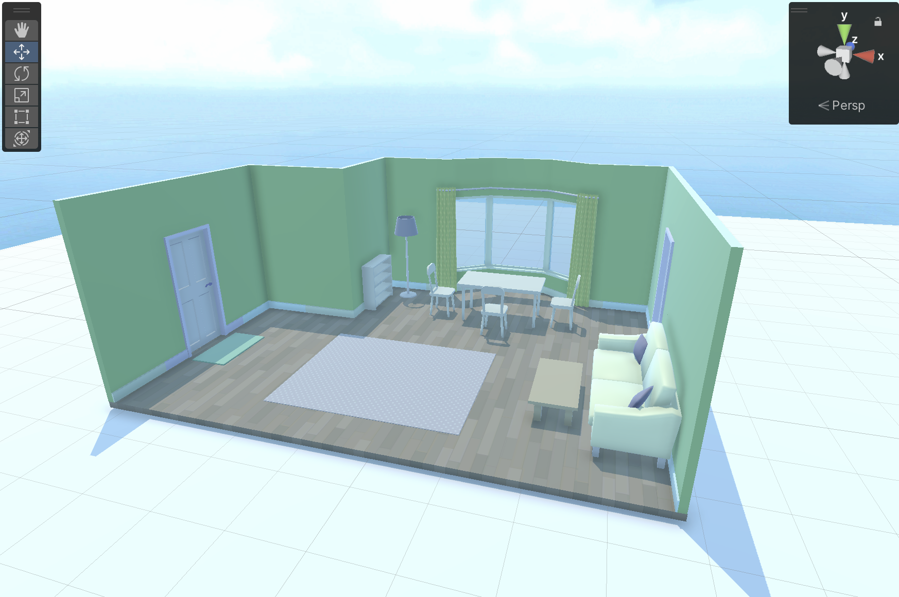
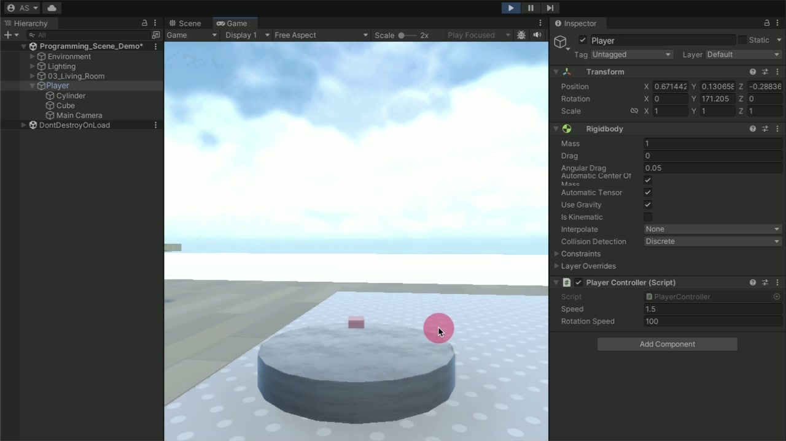
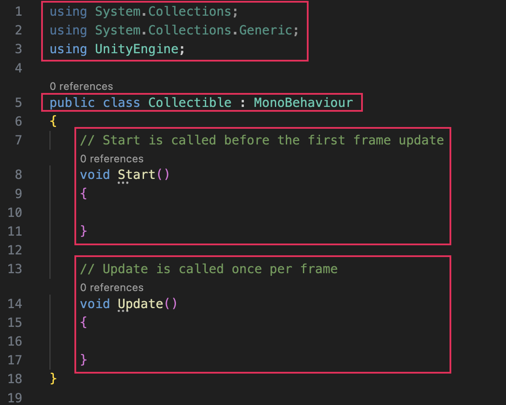
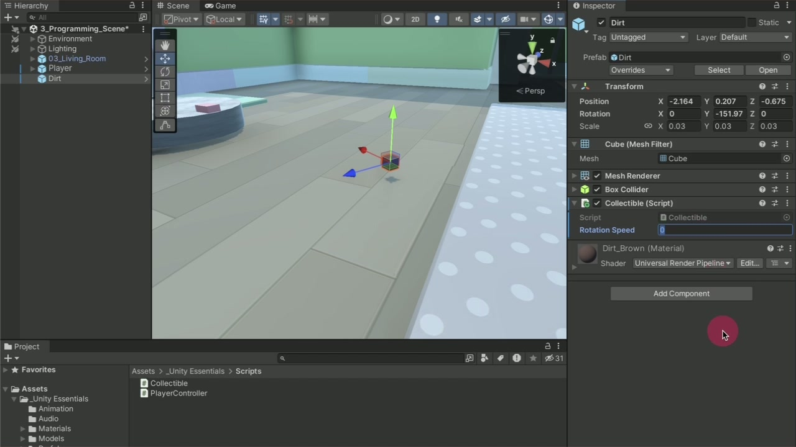
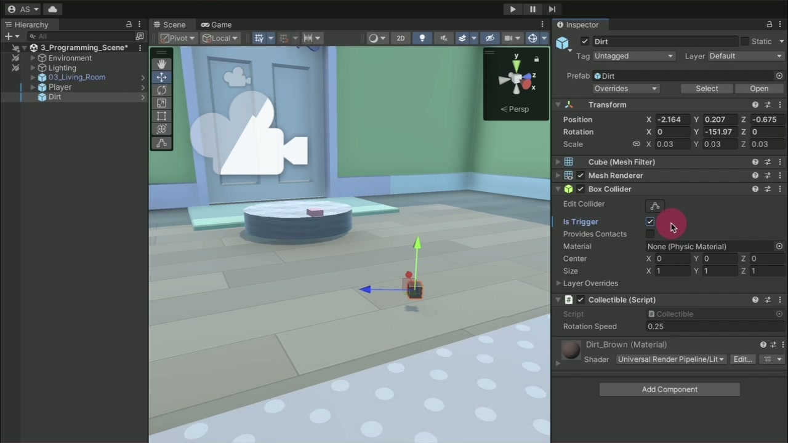
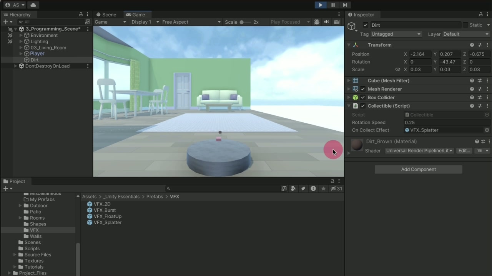
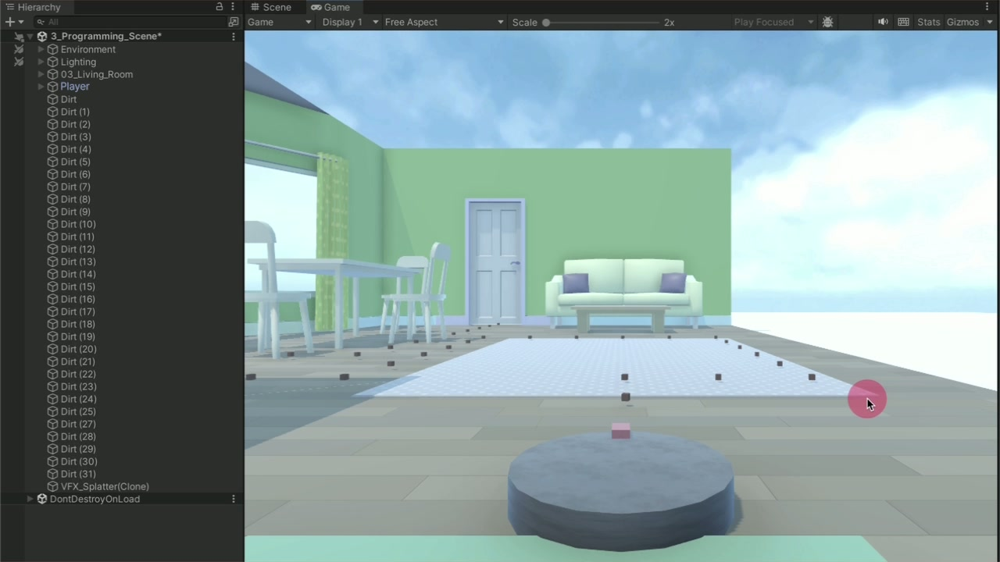
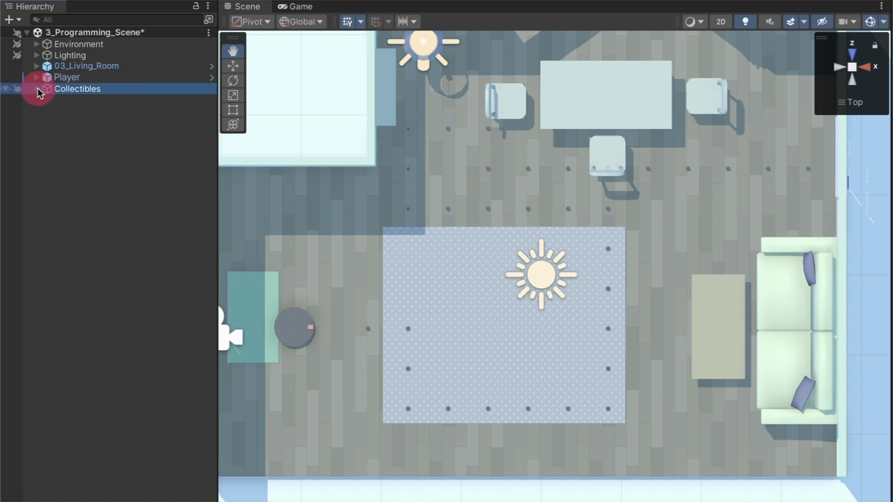

Build an interaction whose visible result can be traced to components and code.
The finished living room has one controllable player, a following camera, and a readable route of collectibles. Each pickup rotates, detects only the Player, disappears, and creates visual feedback.
- Explain why a C# script becomes a component on a GameObject.
- Configure the Input System and a Rigidbody-based movement loop.
- Distinguish
Start,Update, andFixedUpdate. - Expose editable fields and test them without losing final values.
- Connect trigger overlap to tag filtering, VFX, and destruction.
- Diagnose a failure from its visible symptom and likely responsibility.
Set up the scene before diagnosing code
Programming does not replace the component model you already know. A script supplies behavior, but the scene still depends on the right GameObject, Rigidbody, Collider, camera relationship, and project input setting.
| Element | Responsibility | Where to verify it |
|---|---|---|
| Input System | Reports keyboard state to the movement component. | Project Settings → Player → Active Input Handling |
| Player | Owns the character visuals, Rigidbody, Collider, and PlayerController. | Hierarchy window and Inspector window |
| PlayerController | Converts input into Rigidbody position and rotation changes. | Player Inspector and script editor |
| Main Camera | Follows because it is a child of Player. | Indented beneath Player in the Hierarchy |
| Collectible | Owns rotation, trigger detection, tag filtering, and pickup feedback. | Collectible Inspector and Collectible script |
- Open Edit → Project Settings, select Player, expand Other Settings, and locate Active Input Handling.
- Select Input System Package (New), then select Apply. Let the Unity Editor restart before continuing.
- In the Project window, open _Unity Essentials → Scenes → 4_LivingRoom_Programming_Scene.
- From _Unity Essentials → Prefabs → Characters, drag one character near the main door on the left. Do not double-click the prefab.
- Rotate it around Y if needed so it faces the room, then rename the instance Player.

Source: Add a movement script ↗
Create a movement script and attach it as a component
A MonoBehaviour script becomes an attachable component. The PlayerController below reads the new Input System, caches the Player’s Rigidbody once, and moves that Rigidbody during Unity’s fixed physics update.
- Open _Unity Essentials → Scripts. Right-click empty space and select Create → MonoBehaviour Script.
- Name the new file PlayerController immediately. The file name and class name must match exactly.
- Drag PlayerController from the Project window onto Player in the Scene view.
- Select Player in the Hierarchy and verify Player Controller (Script) at the bottom of the Inspector.
- Double-click the script to open the configured script editor, replace the template with the supplied code, and save the file.
- Return to the Unity Editor, wait for compilation to finish, enter Play mode, and test both WASD and the arrow keys.
using UnityEngine;
using UnityEngine.InputSystem;
/// <summary>
/// Moves forward/backward and rotates with WASD/Arrow keys.
/// </summary>
public class PlayerController : MonoBehaviour
{
[Tooltip("Forward/back speed (units/sec).")]
public float speed = 5.0f;
[Tooltip("Turn speed (degrees/sec).")]
public float rotationSpeed = 120.0f;
private Rigidbody rb;
private void Start()
{
rb = GetComponent<Rigidbody>();
if (rb == null) Debug.LogWarning("PlayerController needs a Rigidbody.");
}
private void FixedUpdate()
{
Vector2 moveInput = Vector2.zero;
if (Keyboard.current.wKey.isPressed || Keyboard.current.upArrowKey.isPressed) moveInput.y = 1f;
if (Keyboard.current.sKey.isPressed || Keyboard.current.downArrowKey.isPressed) moveInput.y = -1f;
if (Keyboard.current.aKey.isPressed || Keyboard.current.leftArrowKey.isPressed) moveInput.x = -1f;
if (Keyboard.current.dKey.isPressed || Keyboard.current.rightArrowKey.isPressed) moveInput.x = 1f;
Vector3 movement = transform.forward * moveInput.y * speed * Time.fixedDeltaTime;
rb.MovePosition(rb.position + movement);
float turnDirection = moveInput.x;
if (moveInput.y < 0) turnDirection = -turnDirection;
float turn = turnDirection * rotationSpeed * Time.fixedDeltaTime;
Quaternion turnRotation = Quaternion.Euler(0f, turn, 0f);
rb.MoveRotation(rb.rotation * turnRotation);
}
}| Code region | Responsibility | Visible or testable result |
|---|---|---|
using | Makes UnityEngine and Input System types available. | Keyboard, Rigidbody, and Vector3 resolve. |
| Public fields | Store speed values and serialize them for the Inspector. | Speed and Rotation Speed appear on Player. |
Start | Gets the Rigidbody component once and warns if it is absent. | The movement code has a physics body to control. |
FixedUpdate | Reads held keys and performs fixed-step physics motion. | Movement remains proportional to units or degrees per second. |
MovePosition | Moves along the Player’s forward direction. | W/Up moves forward; S/Down reverses. |
MoveRotation | Rotates around the Y-axis. | A/Left and D/Right turn the Player. |

Make the camera follow, then tune one field at a time
Parenting transfers motion through the Transform hierarchy. When Main Camera is a child of Player, its position and rotation are local to Player, so the camera follows without a second movement script.
- Drag Main Camera onto Player in the Hierarchy. Confirm that it becomes indented beneath Player.
- Open the Main Camera Transform component’s More (⋮) menu and select Reset.
- Move the camera slightly above and behind Player. Use the camera Preview panel to frame the character.
- Enter Play mode, select Player, and change only Speed. Test the same route twice.
- Restore Speed, change only Rotation Speed, and repeat the turn test.
- Write down the preferred values, exit Play mode, apply those values again outside Play mode, and save the scene.
Immediate feedback is useful for comparison, but Inspector changes revert when Play mode ends.
Reapply the chosen values after exiting Play mode, then save the scene so the configuration persists.
| Observed result | Likely cause | Inspect next |
|---|---|---|
| No movement and compile errors | Unsaved, incomplete, or misnamed script | Console, file/class name, script editor save state |
| Rigidbody warning | PlayerController cannot find a Rigidbody | Player Inspector |
| Keys do nothing without compile errors | Wrong Active Input Handling or Game view lacks focus | Project Settings and Game view focus |
| Player moves but camera stays behind | Main Camera is not a child of Player | Hierarchy indentation |
| Good values disappear | They were changed only in Play mode | Reapply in Edit mode and save |
Write a small component that rotates a collectible
The Collectible script is the first behavior written line by line. Its structure separates the component definition from event functions and editable data; Update is the event used for continuous per-frame visual motion.
- From _Unity Essentials → Prefabs → Collectibles, place one collectible directly in front of Player.
- Create a Collectible MonoBehaviour script in the Scripts folder and drag it into the collectible’s Inspector.
- Open the script and locate
using UnityEngine;, the class declaration,Start, andUpdate. - Switch the Scene view handle orientation to Local. Scrub Transform → Rotation → Y to preview the intended axis.
- Inside
Update, addtransform.Rotate(0, 1, 0);, save, and test the fast rotation. - Change the Y value to
0.5f, save, and compare the slower rotation. - Declare
public float rotationSpeed;above the event functions, then replace the literal withrotationSpeed. - Save, return to Unity, set Rotation Speed in the Inspector, and test again.

| Structure | Meaning in this component | Common confusion |
|---|---|---|
using UnityEngine; | Makes Unity types and APIs available. | It does not attach the script to a GameObject. |
class Collectible | Names the custom component type. | The class name must match Collectible.cs. |
: MonoBehaviour | Makes the class an attachable Unity component with event functions. | A GameObject itself does not need a MonoBehaviour. |
Start | Runs once before the first Update while enabled. | It is not the place for continuous rotation. |
Update | Runs once per rendered frame while enabled. | Its frequency varies with frame rate. |
| Public float field | Stores a decimal value and appears as Rotation Speed in the Inspector. | 0.5 is a double literal; 0.5f is a float literal. |
using UnityEngine;
public class Collectible : MonoBehaviour
{
public float rotationSpeed;
private void Update()
{
transform.Rotate(0, rotationSpeed, 0);
}
}rotationSpeed is degrees per rendered frame. This matches the supplied tutorial and makes 0.5 a useful test value.
rotationSpeed * Time.deltaTime interprets the field as degrees per second and is stable across different frame rates.

Source: Create a rotating collectible ↗
Detect overlap without creating a physical barrier
A physical collider blocks or deflects the Player. A trigger collider keeps the overlap volume but removes the solid response, allowing OnTriggerEnter to report that the Player entered it.
- Place the collectible directly in Player’s path, enter Play mode, and collide with it while its Collider is still physical.
- Exit Play mode, select the collectible, locate its Collider component, and enable Is Trigger.
- Test again. Player should pass through without resistance, but the collectible should remain visible.
- Open Collectible.cs and add
OnTriggerEnter(Collider other)afterUpdatebut before the class’s final brace. - Plan the behavior with the comment
// Destroy the collectible. - Add
Destroy(gameObject);, save, and retest. The collectible should disappear from both the Scene and Hierarchy when entered.
Produces contact response. The Player bumps into the collectible, which is wrong for a pickup.
Reports overlap without blocking. It supplies the event needed for a pickup.

private void OnTriggerEnter(Collider other)
{
// Destroy the collectible
Destroy(gameObject);
}Destroy, Player passes through and the collectible remains. This separates physics configuration from scripted response.
Spawn feedback and restrict collection to Player
The initial trigger destroys the collectible for any qualifying physics object. The completed event adds two responsibilities: instantiate a VFX prefab at the pickup position, and run the pickup actions only when the entering Collider carries the Player tag.
- In _Unity Essentials → Prefabs → VFX, preview the non-2D particle prefabs and choose one. Exit Prefab editing mode with the Hierarchy back arrow.
- Declare
public GameObject onCollectEffect;belowrotationSpeed, save, and return to Unity. - Drag the selected VFX prefab onto On Collect Effect in the collectible’s Inspector.
- Inside
OnTriggerEnter, addInstantiate(onCollectEffect, transform.position, transform.rotation);. - Select Player and choose Player from the Inspector’s Tag dropdown.
- Add
if (other.CompareTag("Player"))and move both pickup actions inside its braces. - Save, test a Player pickup, then test a collectible overlapping a chair or couch. Furniture must not collect it.

using UnityEngine;
public class Collectible : MonoBehaviour
{
public float rotationSpeed;
public GameObject onCollectEffect;
private void Update()
{
transform.Rotate(0, rotationSpeed, 0);
}
private void OnTriggerEnter(Collider other)
{
if (other.CompareTag("Player"))
{
Destroy(gameObject);
Instantiate(onCollectEffect, transform.position, transform.rotation);
}
}
}| Stage | Question answered | Observable result |
|---|---|---|
| Trigger overlap | Did a physics object enter this volume? | OnTriggerEnter receives the other Collider. |
| Tag condition | Is that other object the Player? | Furniture is ignored; Player continues. |
| Instantiate | What feedback appears, and where? | A VFX prefab is copied at the collectible Transform. |
| Destroy | What object leaves the scene? | The collectible is removed after the current update loop. |
Destroy(gameObject) schedules destruction after the current update loop; it does not erase the Transform in the middle of this method. The following Instantiate call can still read the collectible’s position and rotation.
Source: Collect the collectible ↗
Turn one working pickup into a readable route
Configure and test one correct collectible before duplicating it. The duplicates inherit the attached script and serialized field values; placement and hierarchy organization then become scene-design responsibilities.
- Switch the Scene view handle orientation to Global, frame 03_Living_Room, and use the Scene gizmo to select Top view.
- Select the Move tool and the working collectible.
- Press Ctrl+D (macOS: Cmd+D) to duplicate it.
- Move the duplicate along one world axis while holding Ctrl (macOS: Cmd) to snap at fixed increments.
- Repeat duplicate-then-move to create a route that takes Player through more than one part of the room.
- Shift-select the collectible instances in the Hierarchy, right-click, and select Create Empty Parent.
- Rename the new parent Collectibles. Use F2 (macOS: Return) for quick renaming.


Use Local orientation to reason about the collectible’s own Y-axis while planning its spin.
Use Global orientation to align duplicates along world axes regardless of each object’s rotation.
Build and prove a playable collection loop
Produce one saved 4_LivingRoom_Programming_Scene that combines movement, camera following, tunable collectible rotation, Player-only trigger collection, VFX feedback, and an organized route. This is the required lecture task.
| Requirement | Minimum configuration | Observable evidence |
|---|---|---|
| Player control | PlayerController + Rigidbody + Input System | WASD and arrows move forward/reverse and turn without Console errors. |
| Camera | Main Camera is a positioned child of Player | The camera follows position and rotation through the route. |
| Route | At least eight reachable rotating collectibles | The next item remains readable and the route crosses more than one room area. |
| Pickup | Is Trigger + OnTriggerEnter + VFX reference | Player passes through, VFX appears, and the collectible leaves the Hierarchy. |
| Filter | Player tag + CompareTag condition | Furniture cannot collect an overlapped item. |
| Persistence | Final fields applied outside Play mode; scene saved | Reloading the scene preserves chosen speed and rotation values. |
- Make one Player and one collectible correct before duplicating anything.
- Run the positive pickup test and the furniture negative test.
- Duplicate the verified collectible into a route of at least eight items.
- Group the instances beneath Collectibles.
- Complete the route from the entrance while observing camera framing and VFX.
- Exit Play mode, reapply any selected values, save, close and reopen the scene, then run the route again.
- Capture one Inspector/Hierarchy screenshot and a short test log naming the positive test, negative test, and persisted values.
Optional: extend one responsibility and prove the new behavior
These source-provided challenges are optional and do not affect lecture completion. Choose one level, preserve the required collection loop, and provide the listed observable evidence.
| Choice | New responsibility | Observable evidence |
|---|---|---|
| Easy · Jump | Detect one Spacebar press and apply upward velocity. | One press produces one jump; Jump Force changes height. |
| Medium · Day/night | Rotate Directional Light over a configurable day duration. | A shortened test day changes the lighting and completes visibly. |
| Expert · Door | Use a Player-only trigger to set an Animator parameter. | Player opens the door; another object does not. |
Easy — add a jump ability
Add public float jumpForce = 5.0f; beside the movement fields, then add this rendered-frame input check below Start:
private void Update()
{
if (Keyboard.current.spaceKey.wasPressedThisFrame)
{
rb.AddForce(Vector3.up * jumpForce, ForceMode.VelocityChange);
}
}Save, press Space once per jump, compare at least two Jump Force values, then apply the selected value outside Play mode.
Medium — generate and verify a day/night component
- Ask an AI coding tool for a Unity C# component that rotates a Directional Light and exposes the seconds per full day in the Inspector.
- Read the generated class declaration and create the script file with the exact same name.
- Attach it to Directional Light, verify the duration field, and set a short value for testing.
- Run one complete test day, inspect Console errors, and explain which line converts elapsed time into rotation.
Expert — open the door with a Player trigger
- Create DoorOpener.cs in the Scripts folder.
- Select the parent Door GameObject—not DoorPanel or DoorHandle—and verify its Animator component.
- Attach DoorOpener, add a Box Collider, enable Is Trigger, and use Edit Collider to size the approach zone.
- Use the script below, save, and test entry with Player and a non-Player object.
using UnityEngine;
public class DoorOpener : MonoBehaviour
{
private Animator doorAnimator;
private void Start()
{
doorAnimator = GetComponent<Animator>();
}
private void OnTriggerEnter(Collider other)
{
if (other.CompareTag("Player") && doorAnimator != null)
{
doorAnimator.SetTrigger("Door_Open");
}
}
}Completion criteria
Lecture completion requires the saved collection loop, its positive and negative tests, and the explanations below. Jump, day/night, and door work remain optional.
Diagnostic questions
- Why does PlayerController use
FixedUpdateandTime.fixedDeltaTimefor Rigidbody movement? - Why does Main Camera follow without its own movement code?
- What is the visible difference between a physical Collider and a trigger Collider?
- Which physics components are required before
OnTriggerEntercan run? - Why is a Player pickup not enough to prove that
CompareTagis correct? - Why can
Instantiatestill read the Transform afterDestroy(gameObject)is called?
Official sources
- 01Programming Essentials mission
- 02Add a movement script
- 03Create a rotating collectible
- 04Collect the collectible
- 05Programming Essentials: More things to try
- 06Unity 6.3 Input System package
- 07Create and use scripts
- 08MonoBehaviour scripting API
- 09Rigidbody.MovePosition
- 10Transform.Rotate
- 11Create and configure a trigger collider
- 12MonoBehaviour.OnTriggerEnter
- 13Object.Instantiate
- 14Object.Destroy
- 15Component.CompareTag
- 16C# floating-point numeric types